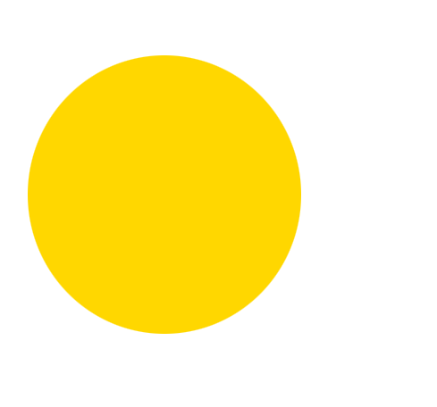
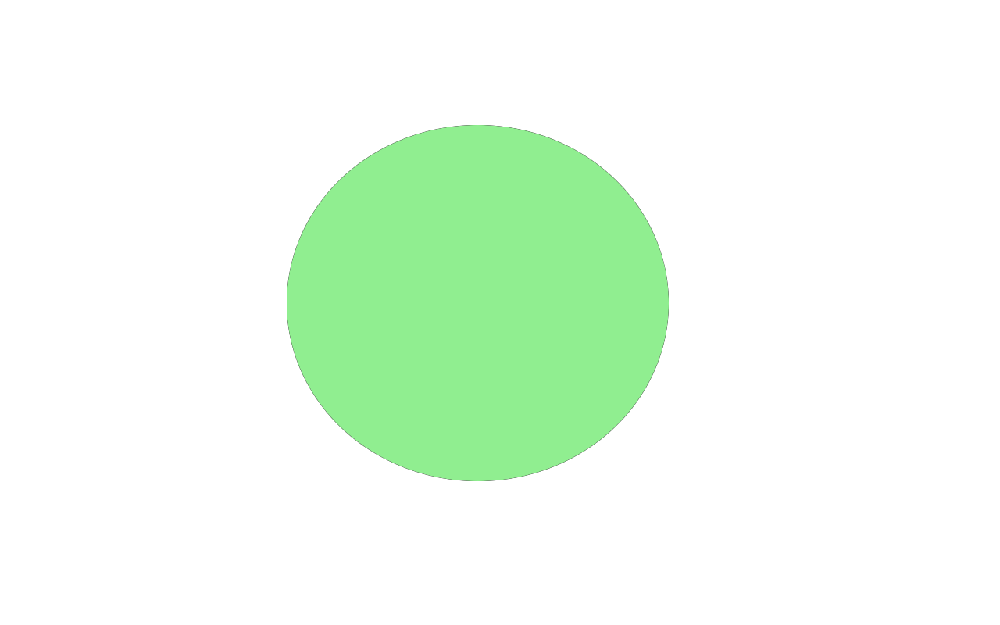

| Corporation name | Kokuyo Ltd. Stationery Branch (Formerly Kokuyo-ST Co. Ltd.) |
| Found year | 1905 |
| Headquarters | Higashinari-ku, Osaka, Japan |
| Famous products | Campus notebooks, Dotliner glue tapes, Harinacs: the first staple-less staplers, Soft ring notebooks, Enpitsu Sharp (sharp pencils that looks and uses like pencils), Kadokeshi erasers (with 28 sides!), and Beetle Tip: the first three-way highlighter |
|  |  |